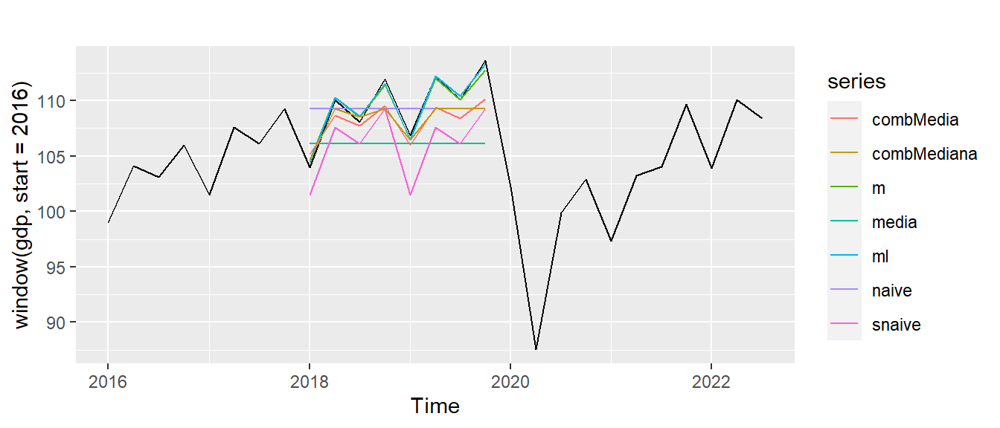
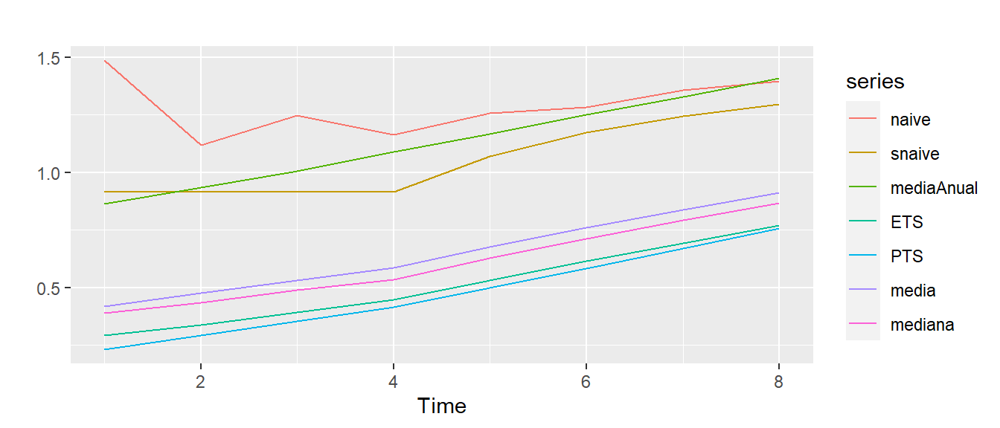

rm(list = ls())
library(UComp)
library(ggplot2)
x = window(gdp, end=c(2019, 4))
m = PTS(x, lambda = NULL)
print(m)
## -------------------------------------------------------------
## Box-Cox lambda: 1.00
## Model: (N,Ad,D)
## Periods: 4.0 / 2.0
## Q-Newton: Function convergence
## (*) concentrated out parameters
## -------------------------------------------------------------
## Param asymp.s.e. |T| |Grad|
## -------------------------------------------------------------
## Damping: 0.8938 0.0356 25.0871 8.77e-07
## Level: 0.0138 0.0459 0.2997 1.97e-07
## Slope: 0.1327*
## Seas(4.0): 0.0120 0.0056 2.1514 1.21e-06
## Seas(2.0): 0.0059 0.0023 2.5480 1.86e-06
## -------------------------------------------------------------
## AIC: 2.3486 BIC: 2.6091 AICc: 2.3686
## Log-Likelihood: -107.4283
## -------------------------------------------------------------
## Summary statistics:
## -------------------------------------------------------------
## Missing data:
## Q( 1): 0.0151 Q( 4): 0.2638
## Q( 8): 4.6922 Q(12): 6.3480
## Bera-Jarque: 21.8404 P-value: 0.0000
## H( 32): 0.6810 P-value: 0.2823
## Outliers (>2.7 ES): 2
## Q( 1): 3.1355 Q( 4): 3.7753
## Q( 8): 8.7195 Q(12): 13.7607
## Bera-Jarque: 0.6227 P-value: 0.7324
## H( 32): 0.6635 P-value: 0.2513
## -------------------------------------------------------------6 Aplicaciones
En este capítulo se abordan algunos problemas prácticos de predicción, con el fin de ilustrar y concretar todo lo que se ha dicho en los capítulos anteriores.
6.1 La transformación Box-Cox de nuevo
A pesar de que esta cuestión ya se abordó en el capítulo inicial, la práctica lleva a puntualizar ciertas cuestiones. Al margen de la cuestión de la heterocedasticidad, la transformacón logarítmica, que es un caso particular de la transformación Box-Cox con \(\lambda=0\), tiene unas consecuencias que merece la pena analizar.
Asumamos una descomposición aditiva para una serie en logaritmos, \(\log(y_t)=T_t+s_{t-m}+\epsilon_t\). En esta ecuación \(T_t=l_{t-1}+b_{t-1}=l_t-\alpha\epsilon_t\) es en realidad el nivel libre de ruido en el momento \(t\). El modelo para la serie en la escala original será \(y_t=e^{T_t}e^{s_{t-m}}e^{\epsilon_t}\) o dicho de otro modo, la descomposición para el logaritmo equivale a en realidad una descomposición multiplicativa del tipo ETS(M,A,M).
Este hallazgo hace que en realidad estimar un modelo con la transformación logarítmica es equivalente a estimar algunos modelos multiplicativos. Por ello, al margen de la cuestión sobre la heterocedasticidad, es conveniente estudiar si la transformación logarítmica tiene sentido en series concretas. Si se descarta dicha transformación se puede afirmar que los modelos multiplicativos no van a superar a los aditivos.
Es por esto que en el paquete UComp implementa una forma particular de estimar la constante \(\lambda\) algo más compleja que el método indicado en Ecuación 2.1. El procedimiento se basa en la descomposición heurística de la serie en cuestión con una tendencia estimada como una media móvil y un componente estacional como una regresión armónica similar al componente estacional ‘D’ pero con coeficientes constantes (varianzas fijas). Teniendo en cuenta esta descomposición se calcula la función de verosimilitud de la descomposición para la serie original, la serie en logaritmos y con la transformación Box-Cox como en Ecuación 2.1. Se toma el \(\lambda\) que produce el máximo de los tres.
En la evaluación de las verosimilitudes, hay que considerar el cambio de escala y cómo afecta a la función. Es decir, las tres verosimilitudes hay que expresarlas en la escala original de la serie. Esto se puede hacer teniendo en cuenta la función de probabilidad de la transformación de una variable aleatoria, que es el producto de la función de densidad de la variable por el determinante del jacobiano de la transformación. Si llamamos \(y_t^{(\lambda)}\) a la variable transformada tenemos que
\[ f(y_1,y_2,\dots,y_T)=f(y_1^{(\lambda)},y_2^{(\lambda)},\dots,y_T^{(\lambda)})|J|. \]
El jacobiano de la transformación en este caso tiene por elementos en la diagonal \(\partial y_i^{(\lambda)} / \partial y_i=y_i^{\lambda-1}\), además todos los elementos fuera de la diagonal principal son cero. De aquí se obtiene que
\[ |J|=\prod_{i=1}^T y_i^{\lambda-1}. \]
Por lo tanto, la verosimilitud calculada para el modelo con el logaritmo y con \(\lambda\) óptimo se pondrán en la misma escala que la variable original multiplicando la verosimilitud estimado por \(|J|\) para el valor correspondiente de \(\lambda\).
Estima el modelo óptimo para el PIB español incluyendo en la optimización el valor del parámetro \(\lambda\) de la transformación Box-Cox, con datos hasta el último trimestre de 2019 (entrada lambda de ETS o PTS). Comprueba que el modelo tiene sentido, sobre todo que los residuos son homocedásticos.
tests(m)
## Summary statistics:
## ==================
## Serie 1
## Data points: 92.00000
## Missing: 8.00000
## Minimum: -2.26145
## 1st quartile: -0.29717
## Mean: 0.09020
## P(Mean = 0): 0.24788
## Median: 0.11231
## 3rd quartile: 0.47663
## Maximum: 1.81451
## Interquartile range: 0.77380
## Range: 4.07596
## Satandard deviation: 0.71038
## Variance: 0.50463
## Skewness: -0.68275
## Kurtosis: 1.69070
## Autocorrelation tests:
## =====================
## SACF sa LB p.val SPACF sp
## 1 -0.016 . 0.021 0.884 -0.016 .
## 2 -0.036 . 0.136 0.934 -0.036 .
## 3 -0.010 . 0.146 0.986 -0.012 .
## 4 0.002 . 0.146 0.997 0.000 .
## 5 -0.174 . 2.906 0.714 -0.175 .
## 6 0.064 . 3.282 0.773 0.060 .
## 7 0.010 . 3.291 0.857 -0.002 .
## 8 -0.106 . 4.350 0.824 -0.110 .
## 9 -0.063 . 4.733 0.857 -0.065 .
## 10 0.088 . 5.496 0.856 0.052 .
## 11 -0.061 . 5.858 0.883 -0.050 .
## 12 0.027 . 5.931 0.920 0.025 .
## 13 0.073 . 6.473 0.927 0.038 .
## 14 -0.067 . 6.932 0.937 -0.081 .
## 15 0.111 . 8.216 0.915 0.156 .
## 16 0.033 . 8.329 0.938 -0.005 .
## 17 -0.013 . 8.348 0.959 -0.010 .
## 18 -0.127 . 10.116 0.928 -0.098 .
## 19 0.061 . 10.533 0.939 0.035 .
## 20 -0.062 . 10.974 0.947 -0.031 .
## 21 -0.022 . 11.029 0.962 -0.011 .
## 22 0.011 . 11.042 0.974 -0.012 .
## 23 0.057 . 11.426 0.978 0.030 .
## Gaussianity tests:
## =================
##
## Shapiro-Wilk normality test
##
## data: x
## W = 0.96007, p-value = 0.01062
##
## Ratio of variance tests:
## =======================
## Portion_of_data F_statistic p.value
## 0.33333 0.7914 0.5475El mejor valor es \(\lambda=1\), por lo que la serie es homocedástica. Los tests de residuos, además, indican que el modelo es adecuado.
from UComp import *
x = window(gdp, end="2019-12-31")
m = PTS(x, lambdaBoxCox=np.nan, verbose=True)
tests(m)clear all
load data
x = gdp(1 : 100);
m = PTS(x, 4, lambda = NaN, verbose=true);
toolTEST(m.v)6.2 Combinación y selección de modelos
En el mundo real no suele haber metodologías que funcionen sistemáticamente mejor que otras. Dada la complejidad de los datos reales, la falta de adecuación de los modelos a dichos datos, los atípicos, a veces la falta de robustez de los programas utilizados, etc. producen una variabilidad en los resultados a veces muy grande.
Aún así nos interesa conseguir las predicciones que mejor reflejen el comportamiento futuro de las series que queremos analizar. Este problema se puede abordar al menos de dos formas alternativas:
-
Selección de modelos. Se deben contemplar dos casos:
- Se va a utilizar una sola familia de modelos, p.ej. ETS. En este caso se suele utilizar criterios de información intramuestral (AIC, BIC, AICc, etc.). Es el método que hemos utilizado hasta el momento para seleccionar modelos de suavizado exponencial SSOE o MSOE.
- Se va a utilizar una batería de modelos que provienen de distintas familias, por ejemplo, ETS frente a PTS y métodos heurísticos. En este caso no se deben usar los criterios de información porque no son uniformes en general en distintas familias. En este caso es recomendable utilizar métricas de predicción en el marco de un experimento. Para ello se estiman todos los modelos en una determinada muestra (training), se evalúa en la muestra de validación (validation) con las métricas que se consideren oportunas. El modelo que mejor se comporte es el que se utiliza para realizar las predicciones finales. No siempre el modelo seleccionado es el que predice mejor fuera de la muestra, por lo que se requiere estar continuamente revisando las métricas de distintos modelos.
- Combinación de predicciones. Una aproximación radicalmente diferente es combinar las predicciones de los distintos modelos con algún criterio objetivo. Suponiendo que los métodos o modelos que se combinan son adecuados para la series en cuestión, esta es una forma de hacer robustas las predicciones.
Un planteamiento general sobre la combinación de predicciones es plantearla como una media ponderada de las predicciones individuales. Si tenemos \(n\) predicciones individuales \(\hat{y}_{1,T+h|T},\hat{y}_{2,T+h|T},\dots,\hat{y}_{n,T+h|T}\), la combinación será \(\hat{y}_{T+h|T}=\sum_{i=1}^n w_i \hat{y}_{i,T+h|T}\), siendo todos los pesos positivos y \(\sum_{i=1}^n w_i = 1\).
Existe una amplia bibliografía sobre el tema de las combinaciones de métodos. La conclusión general es que combinaciones sencillas como la media (que es un caso particular de la combinación anterior) o la mediana de las predicciones resultan ser muy eficientes por los resultados que se obtienen frente a la facilidad con que se pueden estimar. La Figura 6.1 muestra el efecto de calcular la media de un conjunto dispar de predicciones. La ventaja de la mediana es que es mucho más robusto que la media frente a alguna predicción que por alguna razón resulta disparatada.
Ambos procedimientos se pueden mezclar, puesto que algunos de los métodos que se analicen con la selección de modelos pueden ser combinaciones de otros individuales, que también pueden entrar individualmente en la competición. De hecho, es muy habitual comparar modelos individuales con distintas combinaciones de ellos mismos.
Predice el PIB español con datos hasta el final de 2017 para los dos años siguientes con seis métodos: método media del último año, naive, naive estacional, PTS para la serie original, PTS para la serie en logaritmos, media de todos los métodos, mediana de todos los métodos (excluyendo la media). Representa todas las predicciones y en un gráfico y di cuál es el mejor. ¿Qué métricas tendría el método naive si el origen de predicción hubiera sido el primer trimestre?
## ME RMSE MAE MPE PRMSE MAPE
## media -3.50050283 4.5903150 4.0337826 -3.12159265 4.1043375 3.6345058
## naive -0.36192895 2.9913983 2.5728024 -0.25591024 2.7555511 2.3560954
## snaive -3.50050282 3.6855744 3.5005028 -3.18847869 3.3548188 3.1884787
## m -0.08339210 0.4730638 0.3992363 -0.06744118 0.4304333 0.3644698
## ml 0.05076619 0.3588330 0.3302354 0.05084466 0.3309259 0.3033153
## combMedia -1.47911210 2.0300628 1.7784344 -1.31651562 1.8158753 1.6044065
## combMediana -1.37794555 2.1629458 1.6501252 -1.22099551 1.9201893 1.4783638
## sMAPE
## media 3.7157288
## naive 2.3548993
## snaive 3.2458552
## m 0.3646971
## ml 0.3031962
## combMedia 1.6194325
## combMediana 1.4964150
Tanto el gráfico como las métricas de error indican que las predicciones de ambos modelos PTS son muy similares, aunque es marginalmente superior con logaritmos, aunque sabemos que no son necesarios.
Las combinaciones son realmente malas porque ambas incluyen la predicción de métodos que no tienen estacionalidad. Es especialmente interesante el caso de la mediana, que, al estar combinando un número impar de métodos siempre coincide con alguno de ellos. Esto puede desfigurar la estacionalidad hasta cierto punto.
En el caso de que el origen de predicción hubiera sido el primer cuatrimestre de cualquier año el modelo naive hubera sido muy malo, porque la serie tiene tendencia ascendente y el naive predeciría en el momento en el que es más bajo. Los errores de predicción del modelo naive tienen estacionalidad, lo que es un indicativo claro de que el modelo es incorrecto.
# Horizonte de predicción
h = 8
# Muestra
x = window(gdp, end = c(2017, 4))
# Calculando predicciones
media = rep(mean(tail(x, 4)), h)
naive = rep(tail(x, 1), h)
snaive = rep(tail(x, 4), 2)
m = PTSmodel(x, h = h)$yFor
ml = exp(PTSmodel(log(x), h = h)$yFor)
predicciones = cbind(media, naive, snaive, m, ml)
# Combinaciones de predicciones
combMedia = rowMeans(predicciones)
combMediana = rowMedians(predicciones)
# Todas las predicciones en una matriz
predicciones = cbind(media, naive, snaive, m, ml, combMedia, combMediana)
# Precisión de predicciónes
Accuracy(predicciones, window(gdp, start=2018, end=c(2019, 4)))
# Representación gráfica
autoplot(window(gdp, start=2016)) + autolayer(predicciones)# Horizonte de predicción
h = 8
# Muestra
x = window(gdp, end = "2017-12-31")
# Calculando predicciones
m = PTSmodel(x, h = h).yFor
naive = ts(x[-1].repeat(h), start=m.index[0], freq='q')
aux = np.hstack((x[-4:].values, x[-4:].values))
snaive = ts(aux, start=m.index[0], freq='q')
media = ts(np.mean(x[-4:]).repeat(h), start=m.index[0], freq='q')
ml = np.exp(PTSmodel(np.log(x), h = h).yFor)
predicciones = pd.concat((media, naive, snaive, m, ml), axis=1)
# Combinaciones de predicciones
combMedia = ts(np.mean(predicciones, axis=1), start=m.index[0], freq='q')
combMediana = ts(np.median(predicciones, axis=1), start=m.index[0], freq='q')
# Todas las predicciones en una matriz
predicciones = pd.concat((media, naive, snaive, m, ml, combMedia, combMediana), axis=1)
# Precisión de predicciónes
Accuracy(predicciones, window(gdp, start="2018-01-31", end="2019-12-31"))
# Representación gráfica
plt.plot(gdp[-50:])
plt.plot(predicciones)% Horizonte de predicción
h = 8;
% Muestra
x = gdp(1 : 92);
% Calculando predicciones
media = repmat(mean(x(end - 3 : end)), h, 1);
naive = repmat(x(end), h, 1);
snaive = repmat(x(end - 3 : end), 2, 1);
m = PTSmodel(x, 4, h=h).yFor;
ml = exp(PTSmodel(log(x), 4, h=h).yFor);
predicciones = [media naive snaive m ml];
% Combinaciones de predicciones
combMedia = mean(predicciones, 2);
combMediana = median(predicciones, 2);
% Todas las predicciones en una matriz
predicciones = [media naive snaive m ml combMedia combMediana];
% Precisión de predicciónes
Accuracy(predicciones, gdp(93 : 100))
% Representación gráfica
t = (50 : length(gdp))';
plot(t, gdp(t), (93 : 100), predicciones)
Importante
Un reloj parado da dos veces al día la hora correcta. Puede suceder que un modelo completamente erróneo arroje la mejor predicción en una situación particular por puro azar. Pero interesa utilizar el modelo que en media dé la mejor predicción, es decir, que en repetidas ocasiones con numerosos orígenes de predicción dé las mejores métricas.
6.3 Sistemas de apoyo a la predicción
Un método de predicción es superior a otro si predice sistemáticamente mejor o cuando de forma agregada las métricas de error son superiores. La forma rigurosa de contrastar esto en casos concretos es plantear un experimento multidimensional con varios orígenes de predicción, varios horizontes de predicción, distintos métodos y cuando sea preciso múltiples series temporales. Es decir, que al menos debería tener 3 dimensiones.
Respecto al origen y horizonte se suele utilizar la validación cruzada, que consiste en obtener predicciones con orígenes de predicción que se van moviendo hacia adelante, como indica la Figura 6.2. El movimiento hacia adelante se puede hacer de forma que se mantenga el inicio de la muestra fijo y el número de datos que se utiliza en la modelización va creciendo a medida que se mueve el origen de predicción (parte superior de la Figura 6.2). Otra versión, que se muestra en la parte inferior, consiste en mantener constante la ventana de datos.
Para una sola serie temporal podemos tener las tres dimensiones que se han comentado, distintos orígenes de predicción, distintos horizontes, y varios métodos. En ese caso, la información sobre cualquiera de las métricas de error de la Figura 2.1 se puede disponer en una matriz tridimensional, como indica la Figura 6.3. La información se puede sintetizar en gráficas que muestra cómo evoluciona una determinada medida de error en función del horizonte de predicción para un conjunto de métodos.
La síntesis que se muestra en la Figura Figura 6.3 se puede obtener agregando los orígenes calculando medias para todas las observaciones de izquierda a derecha en el cubo. De esta forma se ve cómo se comportan los métodos a medida que crece el horizonte de predicción. Pero nada impide que se utilicen otras formas de agregación, por ejemplo, se podría agregar de arriba a abajo y el resultado indicaría cómo se comportan los métodos respecto al origen de predicción, puede ser que haya determinados orígenes especialmente difíciles de manejar. La última posibilidad sería agregar del frente hacia el fondo, pero esta es menos interesante, puesto que mostraría orígenes frente a horizontes mezclando los métodos.
Se puede aún agregar más, aunque va perdiendo el interés. Por ejemplo, se puede obtener la evolución agregada de todos los métodos en función del horizonte o del horizonte frente a los métodos. Finalmente, aunque un tanto exagerado, todo el cubo se puede reducir a un solo número que reflejaría la media de todos los criterios.
Nada impide, y de hecho se hace muy a menudo, añadir una cuarta dimensión si disponemos de un conjunto de series temporales. En ese caso tendríamos un cubo por cada serie temporal o una matriz de errores con cuatro dimensiones. En ese caso, es especialmente conveniente controlar qué series específicas son las que más contribuyen al error, e intentar refinar los métodos en esos casos.
Siempre que se va a iniciar un proceso complejo como el de este ejercicio es conveniente reiniciar toda la memoria y cargar las librerías necesarias. Considera los modelos media del último año, naive, naive estacional, PTS, ETS, mediana de todos menos naive, media de todos menos naive. Calcula las predicciones de los modelos con ventanas solapadas para \(h = 4\) desde un origen inicial en el último trimestre de 2004. Para ello utiliza las funciones forecastMethods y MASE que se muestran más abajo para R (en los demás lenguajes se pueden ver en sus respectivas pestañas). La función forecastMethods sirve para predecir una serie temporal con todos los métodos que se incluyan y MASE calcula todas las métricas de error de una serie temporal frente a todas las predicciones para esa serie. Utiliza las funciones slide y plotSlide para generar las predicciones 2 años hacia adelante. ¿Qué modelo es el mejor predictor para esta serie?
La función forecastMethods necesita como entradas la serie temporal y devuelve las predicciones por todos los métodos en una matriz cuyas filas son el horizonte de predicción y columnas cada uno de los métodos.
La función MASE calcula el mean absolute squared error de las predicciones para una sola serie temporal y la predicción por un solo método. Necesita como entradas la predicción y los valores reales dentro y fuera de la muestra (training y testing). La función asume que las predicciones se corresponden con los periodos muestrales de las últimas observaciones de la serie real.
# Función que predice todos los modelos sobre una serie
forecastMethods = function(x, h = 4){
# Función que devuelve predicciones de todos los métodos en columnas
# Algunos ajustes dependiendo de si la entrada es una serie
if (is.ts(x)){
m = frequency(x)
} else {
m = h
}
# Número de años de predicción
nYears = ceiling(h / m)
# Prediciendo modelos
naive = rep(tail(x, 1), h)
snaive = rep(tail(x, m), nYears)[1 : h]
mediaAnual = rep(mean(tail(x, m)), h)
pETS = ETSmodel(x, h = h)$yFor
pPTS = PTSmodel(x, h = h)$yFor
pred = cbind(snaive, mediaAnual, pETS, pPTS)
# Combinación de modelos
media = rowMeans(pred)
mediana = rowMedians(pred)
# Todos los modelos en una matriz
predicciones = cbind(naive, snaive, mediaAnual, pETS, pPTS, media, mediana)
# Nombres de columnas
colnames(predicciones) = c("naive", "snaive", "mediaAnual", "ETS", "PTS",
"media", "mediana")
return(predicciones)
}
# Función que calcula el MASE sobre una predicción para una serie temporal
MASE = function(px, x){
if (is.ts(x)){
m = frequency(x)
} else {
m = 1
}
n = length(x)
h = length(px)
tx = x[(n - h + 1) : n]
error1 = mean(abs(x[(m + 1) : (n - h)] - x[1 : (n - h - m)]))
return(cumsum(abs(px - tx)) / error1 / (1 : h))
}
Cada método se ha ejecutado sobre 57 orígenes de predicción diferentes y queda patente que los métodos más sofisticados son los que mejor predicen. En este caso las combinaciones de métodos no superan a los métodos individuales.
# Seleccionando muestra, origen de predicción, horizonte y step
y = window(gdp, end=c(2019, 4))
orig = length(window(gdp, end=c(2003, 4)))
h = 8
step = 1
# Estimando todas las predicciones
out = slide(y, orig, forecastMethods, h = h, step=step)
# Muestra predicciones agregadas por métodos
aux = plotSlide(out, y, orig, step, MASE)from UComp import *
# Función que devuelve predicciones de todos los métodos en columnas
def forecastMethods(x, h=4, s=4):
nYears = np.ceil(h / s)
naive = np.repeat(x[-1], h)
snaive = np.tile(x[-s:], int(nYears))[:h]
mediaAnual = np.repeat(np.mean(x[-s:]), h)
pETS = ETSmodel(x, h=h, s=s).yFor
pPTS = PTSmodel(x, h=h, s=s).yFor
pred = np.column_stack((snaive, mediaAnual, pETS, pPTS))
media = np.mean(pred, axis=1)
mediana = np.median(pred, axis=1)
predicciones = np.column_stack((naive, snaive, mediaAnual, pETS, pPTS, media, mediana))
return predicciones
# Función para calcular el MASE
def MASE(px, actual, s=4):
n = len(actual)
h = len(px)
tx = actual[-h:]
error1 = np.mean(np.abs(actual[s : (n - h)] - actual[0: (n - h - s)]))
return np.cumsum(np.abs(px - tx)) / error1 / np.arange(1, h + 1)
# Seleccionando muestra, origen de predicción, horizonte y step
y = window(gdp, end="2019-12-31")
orig = len(window(gdp, end="2003-12-31"))
h = 8
step = 1
# Estimando todas las predicciones
out = slide(y, orig, forecastMethods, h, step, s=4)
# Muestra predicciones agregadas por métodos
aux = plotSlide(out, y, orig, step, MASE, s=4)La solución para MATLAB/Octave implica grabar las dos funciones siguientes en archivos independientes para poder ser utilizadas en el código de la solución.
% Función que devuelve predicciones de todos los métodos en columnas
function predicciones = forecastMethods(x, s, h)
% Función que devuelve predicciones de todos los métodos en columnas
if nargin < 3
h = 4;
end
nYears = ceil(h / s);
naive = repmat(x(end), h, 1);
snaive = repmat(x(end - s + 1 : end), nYears, 1);
snaive = snaive(1 : h);
mediaAnual = repmat(mean(x(end - s + 1 : end)), h, 1);
pETS = ETSmodel(x, s, h=h).yFor;
pPTS = PTSmodel(x, s, h=h).yFor;
pred = [snaive mediaAnual pETS pPTS];
media = mean(pred, 2);
mediana = median(pred, 2);
predicciones = [naive snaive mediaAnual pETS pPTS media mediana];
end
% Función que calcula la métrica de error MASE
function mase = MASE(px, actual, s)
n = length(actual);
h = length(px);
tx = actual(n - h + 1 : n);
error1 = mean(abs(actual(s + 1 : n - h) - actual(1 : n - h - s)));
mase = cumsum(abs(px - tx)) / error1 ./ (1 : h)';
end
% Inicializando memoria
clear all
load data
% Seleccionando muestra, origen de predicción, horizonte y step
y = gdp(1 : 100);
orig = 36;
h = 8;
step = 1;
% Estimando todas las predicciones
out = slide(y, 4, orig, @forecastMethods, h=h, step=step);
% Muestra predicciones agregadas por métodos
aux = plotSlide(out, y, 4, orig, step, @MASE);
Importante
Las combinaciones de métodos suelen superar a los individuales en casos en que se estén prediciendo muchas series temporales, no tanto para series individuales, aunque se utilicen múltiples orígenes de predicción